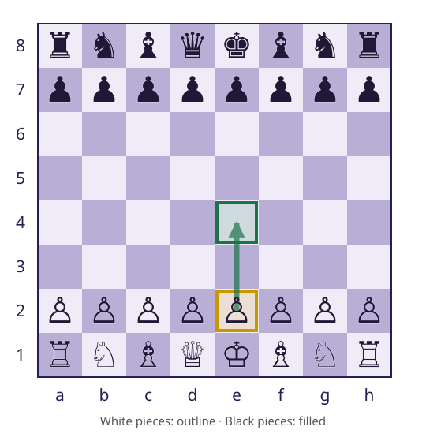
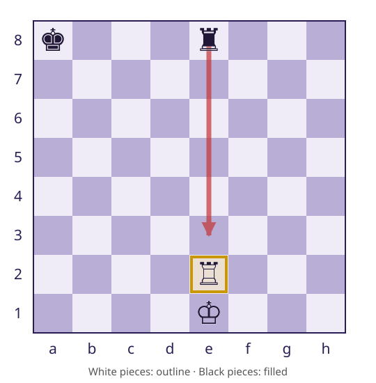
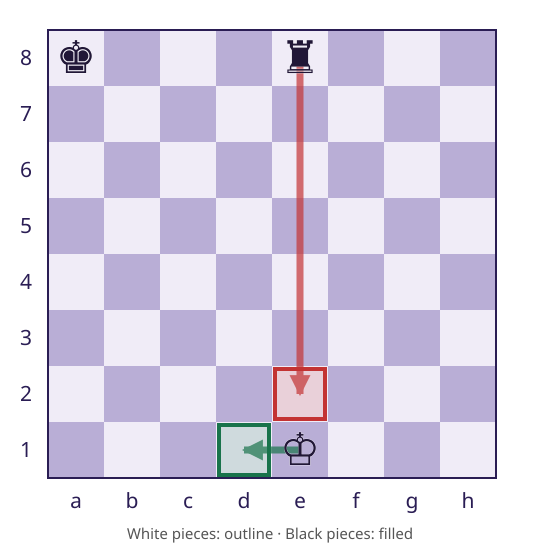

CSC 413 · Week 7 · Monday Oct 5
Refactoring and Code Smells
Same behavior, better structure
San Francisco State University
Refactoring and Code Smells
By the end of today you can
- Say what a refactor must preserve, and tell a refactor from a feature on the M4/M5 line
- Read a smell — duplicate loops, mixed responsibilities, type branches, unclear names — as a question to investigate, not a verdict
- Carry out the three M4 extractions (explicit inputs, preserved entry point,
Gamedelegates) and check them with the tests plus the diff
Part one
The lookup you have today
What does a refactor preserve?
A refactor changes internal structure while preserving observable behavior.
Return values, exceptions, board state, turn, and undo effects all count.
Moving the loop is a refactor. Adding king safety is a feature.
Observable behavior
- Same move list
- Same board after a query
- Same turn and history
A smell is a question to investigate
A smell suggests a possible cost of changing the code. It does not prove incorrect behavior.
A method using two fields is not sufficient reason to extract it.
Examples to inspect
- Duplicate loops: can two rules drift?
- Mixed responsibilities: which changes belong together?
- Type branches: does Piece already supply the behavior?
- Unclear names: what must a reader reconstruct?
Starting a game and requesting e2e4
new Game() starts with White to move.
e2e4 requests a two-square pawn advance.
e2e5 also names two squares, but requests an unavailable three-square move.
White to move

From a string to a Move
Game.play accepts a Move. The caller has notation.
findLegalMove returns a matching move, or an empty Optional.
Only a found move is passed to play.
Part two
King safety arrives
The next rule: king safety
A king is in check when an opponent attacks its square.
A legal move must leave its own king out of check.
This applies both to exposing a safe king and escaping an existing check.
A blocked attack

Why must e2f2 be rejected?
The rook can travel from e2 to f2.
What happens to the White king when the rook leaves the e-file?
Trial position

Escaping an existing check
With the White rook removed, the king is already in check.
e1e2 remains on the attacked file.
e1d1 moves to a safe square in this position.
Red: attacked · green: safe

How could the program check safety?
The answer depends on the board after the candidate move.
What sequence would let the program inspect that board without playing a turn?
A position query
- Apply a candidate temporarily.
- Check its own king.
- Undo the candidate.
- Retain it only if safe.
Trace the rejected candidate
After apply(e2f2), the king on e1 is attacked.
isInCheck returns true. undo restores the rook to e2.
The candidate is excluded; no turn was played.
Inspect, then restore
How could this calculation be reusable?
Part three
Extract, then verify
M4 establishes the boundary first
Tests check behavior; the diff checks structure
Why separate refactoring from feature work?
If extraction and filtering happen together, a missing move has several possible causes.
Complete the unchanged-behavior step first. Then check the new rule with distinguishing positions.
Different claims need different checks
- M4: same candidate set
- M5: e2f2 disappears in the pinned position
- Both: queries restore the board
Which changes belong in M4?
Explain each choice using its effect on behavior and responsibilities.
Review exercise
- Move the loop and delegate.
- Keep two copies of the loop.
- Replace polymorphism with type branches.
- Add king safety.
- Rewrite history storage.
- Remove an unused import.
Can green tests hide an unfinished refactor?
Explain how both implementations can agree while the loop still exists twice.
Which methods would you inspect?
Review
M4 due October 12, 11:59 PM.
Next: API boundaries, attack queries, and board restoration.
M3 due tonight 11:59 PM · M4 due Mon Oct 12
Next: Wednesday Oct 7
Information hiding and clean code: the API boundary that lets M5 filter moves without rewriting Game.
We ask what Game.legalMoves promises — and what a caller can break.